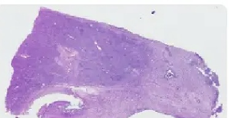
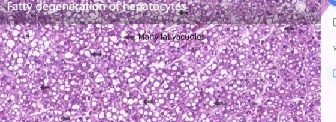
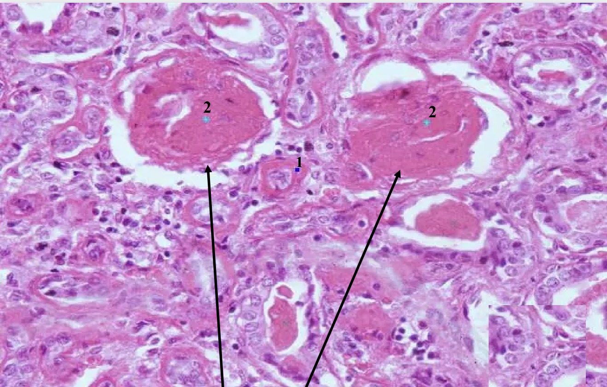
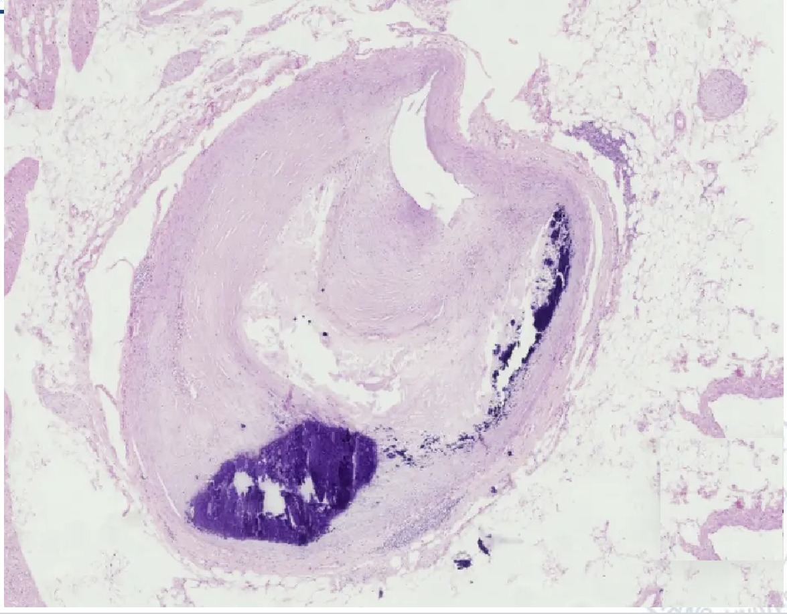

Five slides. The first three are the same lesion in two organs — swelling in kidney, swelling in liver, fat in liver — set up so you can see the difference for yourself. The last two are hyaline and calcium. Work each card at 4× first, exactly as you would at the bench.پنج لام. سه تای نخست، یک ضایعه در دو عضوند — تورم در کلیه، تورم در کبد، چربی در کبد — چنان چیده شدهاند که تفاوت را خودتان ببینید. دو تای آخر، هیالین و کلسیماند. هر کارت را اول در ۴× کار کنید، دقیقاً همانطور که سر میز میکنید.
By the end of this Part you should be able toدر پایان این بخش باید بتوانید
Recognise hydropic change in a renal tubule and in a hepatocyte.تغییر هیدروپیک را در توبول کلیه و در هپاتوسیت تشخیص دهید.
Distinguish a hydropic vacuole from a fat vacuole at 40×.واکوئل هیدروپیک را در ۴۰× از واکوئل چربی تفکیک کنید.
Identify hyaline change in a glomerulus and in an arteriolar wall.تغییر هیالینی را در گلومرول و در دیوارهٔ آرتریول شناسایی کنید.
Recognise dystrophic calcification on an H&E section by its colour alone.کلسیفیکاسیون دیستروفیک را در مقطع معمولی تنها با رنگش بشناسید.
4.1Slide 9 — Cloudy Swelling of the Kidneyلام ۹ — تورم کدر کلیه
Fig 4.1 Proximal tubules with swollen epithelium. The cells bulge into the lumen, which is narrowed to a slit; the nuclei are unremarkable.توبولهای پروگزیمال با اپیتلیوم متورم. سلولها به درون مجرا برجسته شدهاند و مجرا به شکافی باریک تقلیل یافته؛ هستهها بدون تغییر قابلذکرند.
The epithelial cells of the renal proximal tubule are swollen.سلولهای اپیتلیال توبول پروگزیمال کلیه متورماند.
The cytoplasm is loose and filled with a large number of fine particles and amorphous vacuoles which are mildly eosin-stained.سیتوپلاسم شل است و پر از تعداد زیادی ذرهٔ ظریف و واکوئلهای بیشکل با رنگپذیری خفیف ائوزینی.
No significant differences could be found in the nuclei.تفاوت قابلتوجهی در هستهها یافت نمیشود.
The tubular lumina are narrowed by the bulging cells.مجاری توبولی بهواسطهٔ برجستگی سلولها باریک شدهاند.
There is interstitial vascular congestion with a small amount of inflammatory cell infiltration in some areas.احتقان عروقی بینابینی همراه با مقدار کمی ارتشاح سلول التهابی در برخی نواحی دیده میشود.
Why it looks like thatچرا این شکلی است
The proximal tubule’s sodium pump has failed and water has followed sodium in (§2.2).Two details in the description are doing real diagnostic work. First, the vacuoles are amorphous — shapeless and ill-defined, not round — because they are dilated cisterns of endoplasmic reticulum, which have no fixed shape. Second, they are mildly eosin-stained rather than water-clear, because they contain protein-rich cytosol, not pure water and certainly not empty space. Both features are the opposite of a fat vacuole, which is round, sharply outlined and completely clear. Third, the nuclei are normal, which is what tells you the cell is injured but alive. The narrowed lumina follow mechanically: the tubule wall cannot expand outwards against its basement membrane, so swelling cells can only expand inwards.پمپ سدیم توبول پروگزیمال از کار افتاده و آب بهدنبال سدیم وارد شده (بخش ۲.۲).دو جزئیات در توصیف، کار تشخیصی واقعی میکنند. نخست، واکوئلها بیشکلاند — بیفرم و با مرز نامشخص، نه گرد — چون سیسترنهای متسع شبکهٔ آندوپلاسمیاند که شکل ثابتی ندارند. دوم، رنگپذیری خفیف ائوزینی دارند نه شفافیت آبی، چون حاوی سیتوزول پروتئیندارند، نه آب خالص و قطعاً نه فضای خالی. هر دو ویژگی، نقطهٔ مقابل واکوئل چربیاند که گرد، با مرز تیز و کاملاً شفاف است. سوم، هستهها طبیعیاند و همین میگوید سلول آسیبدیده اما زنده است. باریکشدن مجاری پیامدی مکانیکی است: دیوارهٔ توبول نمیتواند در برابر غشای پایه به بیرون گسترش یابد، پس سلولهای متورم تنها میتوانند به درون گسترش پیدا کنند.
Pathological diagnosisتشخیص پاتولوژیک
Cloudy swelling (hydropic degeneration) of the kidneyتورم کدر (دژنراسیون هیدروپیک) کلیه
Write it like thisاینگونه بنویسید
Tissue: Kidney. Description: The epithelial cells of the proximal convoluted tubules are diffusely swollen and bulge into the lumina, which are narrowed. Their cytoplasm is loose and contains numerous fine granules and ill-defined, faintly eosinophilic vacuoles. The nuclei show no significant change. There is interstitial vascular congestion with a scanty inflammatory cell infiltrate focally. Glomeruli are unremarkable and no necrosis is seen. Diagnosis: Cloudy swelling (hydropic degeneration) of the renal tubular epithelium.بافت: کلیه. توصیف: سلولهای اپیتلیال لولههای پیچیدهٔ پروگزیمال بهطور منتشر متورماند و به درون مجاری برجسته شدهاند که باریک گردیدهاند. سیتوپلاسمشان شل است و دانههای ظریف متعدد و واکوئلهای نامشخص با رنگپذیری ضعیف ائوزینی دارد. هستهها تغییر قابلتوجهی نشان نمیدهند. احتقان عروقی بینابینی همراه با ارتشاح مختصر سلول التهابی بهصورت کانونی وجود دارد. گلومرولها بدون تغییر قابلذکر و نکروزی دیده نمیشود. تشخیص: تورم کدر (دژنراسیون هیدروپیک) اپیتلیوم توبول کلیه.
Slide 46 · Micro · H&E, humanHepatocellular oedema — cellular swelling of the liverادم هپاتوسیت — تورم سلولی کبد
What you seeچه میبینید

Fig 4.2 Low power. The tissue looks uniformly solid — the sinusoidal spaces that should separate the plates have been squeezed shut. That crowded, solid appearance is the low-power finding.بزرگنمایی پایین. بافت یکدست و توپر بهنظر میرسد — فضاهای سینوزوئیدی که باید صفحات را جدا کنند، فشرده و بسته شدهاند. همین نمای متراکم و توپر، همان یافتهٔ بزرگنمایی پایین است.
The hepatocytes are diffusely swollen.هپاتوسیتها بهطور منتشر متورماند.
The hepatic sinusoids are narrow or occlusive — compressed by the enlarged cells.سینوزوئیدهای کبدی باریک یا مسدودند — فشردهشده توسط سلولهای بزرگشده.
The cytoplasm is loose, granular, reticulate, or transparent — the four stages of hydropic degeneration, often all present on one slide.سیتوپلاسم شل، دانهدار، مشبک یا شفاف است — چهار مرحلهٔ دژنراسیون هیدروپیک که اغلب همه روی یک لام حاضرند.
A small number of hepatocytes are balloon-like — hugely distended and nearly clear.تعداد کمی از هپاتوسیتها بالونیاند — بهشدت متسع و تقریباً شفاف.
Why it looks like thatچرا این شکلی است
The same mechanism as Slide 9, in a different organ — and the four cytoplasmic appearances are a time course, not four different diseases.As water enters, the cytoplasm first becomes loose; swollen mitochondria and dilated ER then make it granular; as the dilated cisterns enlarge and run together they form a network of clear spaces, so the cell looks reticulate; finally the spaces coalesce completely and the cytoplasm looks transparent — the balloon cell. Seeing all four on one slide simply means you are looking at cells at different stages of the same process. The narrowed sinusoids are the most valuable low-power sign: normal liver looks airy because the sinusoids separate the plates, and a liver that looks solid and crowded at 4× has swollen hepatocytes even before you go to 40× to confirm it.همان مکانیسم لام ۹، در عضوی دیگر — و آن چهار نمای سیتوپلاسمی یک سیر زمانیاند، نه چهار بیماری متفاوت.با ورود آب، سیتوپلاسم ابتدا شل میشود؛ سپس میتوکندریهای متورم و شبکهٔ متسع آن را دانهدار میکنند؛ وقتی سیسترنهای متسع بزرگ و به هم متصل شوند، شبکهای از فضاهای شفاف میسازند و سلول مشبک بهنظر میرسد؛ سرانجام فضاها کاملاً یکی میشوند و سیتوپلاسم شفاف دیده میشود — همان سلول بالونی. دیدن هر چهار حالت روی یک لام صرفاً یعنی به سلولهایی در مراحل مختلف یک فرایند نگاه میکنید. باریکشدن سینوزوئیدها باارزشترین نشانهٔ بزرگنمایی پایین است: کبد طبیعی بهدلیل جداکردن صفحات توسط سینوزوئیدها، بازوگشوده بهنظر میرسد، و کبدی که در ۴× توپر و متراکم دیده شود، هپاتوسیت متورم دارد، حتی پیش از آنکه برای تأیید به ۴۰× بروید.
Pathological diagnosisتشخیص پاتولوژیک
Hepatocellular oedema — cellular swelling (hydropic degeneration) of the liverادم هپاتوسیت — تورم سلولی (دژنراسیون هیدروپیک) کبد
Write it like thisاینگونه بنویسید
Tissue: Liver. Description: The lobular architecture is preserved. The hepatocytes are diffusely swollen and the intervening sinusoids are narrowed or obliterated. Hepatocyte cytoplasm is variably loose, finely granular, reticulate or transparent, and a small number of cells are markedly distended and almost clear (balloon cells). The nuclei are normally positioned and show no pyknosis or karyorrhexis. No fat vacuoles, necrosis or inflammatory infiltrate are seen. Diagnosis: Hepatocellular oedema (cellular swelling of the liver).بافت: کبد. توصیف: معماری لوبولی حفظ شده است. هپاتوسیتها بهطور منتشر متورماند و سینوزوئیدهای میانی باریک یا محو شدهاند. سیتوپلاسم هپاتوسیتها بهتناوب شل، ریزدانه، مشبک یا شفاف است و تعداد کمی از سلولها بهشدت متسع و تقریباً شفافاند (سلولهای بالونی). هستهها در جای طبیعیاند و پیکنوز یا کاریورکسی نشان نمیدهند. واکوئل چربی، نکروز یا ارتشاح التهابی دیده نمیشود. تشخیص: ادم هپاتوسیت (تورم سلولی کبد).
4.3Slide 10 — Fatty Degeneration of the Liverلام ۱۰ — استئاتوز کبد
Slide 10 · Micro · H&E, human · HOMEWORKFatty degeneration of hepatocytesدژنراسیون چربی هپاتوسیتها
What you seeچه میبینید

Fig 4.3 Diffuse fatty change. The vacuoles are round, sharply outlined and of clearly differing sizes — compare this texture with Fig 4.1, where the vacuoles have no edges at all.تغییر چربی منتشر. واکوئلها گرد، با مرز تیز و آشکارا با اندازههای متفاوتاند — این بافت را با شکل ۴.۱ مقایسه کنید که در آن واکوئلها اصلاً مرزی ندارند.
Hepatocytes demonstrate diffuse fatty degeneration — the change involves the whole section, not a focus.هپاتوسیتها دژنراسیون چربی منتشر نشان میدهند — تغییر کل مقطع را در بر میگیرد، نه یک کانون.
The swollen hepatocytes contain abundant round vacuoles of varying sizes in the cytoplasm.هپاتوسیتهای متورم، واکوئلهای گرد فراوان با اندازههای متفاوت در سیتوپلاسم دارند.
A large vacuole can push the nucleus to one side of the cell.واکوئل بزرگ میتواند هسته را به یک طرف سلول براند.
The hepatic sinusoids are compressed and narrowed.سینوزوئیدهای کبدی فشرده و باریک شدهاند.
Why it looks like thatچرا این شکلی است
Triglyceride has accumulated as discrete droplets, and each descriptive word follows from the physics of a droplet.Fat and cytosol do not mix, so the lipid forms separate droplets with a sharp interface — hence round and sharply outlined, unlike the shapeless dilated cisterns of hydropic change. Small droplets coalesce into larger ones over time, so a cell contains vacuoles of varying sizes — a single snapshot of an ongoing process. When one droplet becomes large enough it displaces everything else, including the nucleus, which ends up flattened against the cell membrane; a hepatocyte in that state looks exactly like an adipocyte and the appearance is called macrovesicular steatosis. And the fat is not actually in the section: the solvents of routine processing dissolved it, leaving the clean empty holes you are looking at (§2.3, Bench Technique).تریگلیسرید بهصورت قطرات مجزا انباشته شده و هر واژهٔ توصیفی از فیزیک یک قطره نتیجه میشود.چربی و سیتوزول مخلوط نمیشوند، پس لیپید قطرات جداگانه با فصل مشترک تیز میسازد — از اینرو گرد و با مرز مشخص، برخلاف سیسترنهای متسع و بیشکل تغییر هیدروپیک. قطرات کوچک بهمرور به قطرات بزرگتر میپیوندند، پس یک سلول واکوئلهایی با اندازههای متفاوت دارد — تکعکسی از فرایندی در جریان. وقتی قطرهای بهقدر کافی بزرگ شود، هر چیز دیگری از جمله هسته را جابهجا میکند و هسته به غشای سلول چسبیده و پهن میشود؛ هپاتوسیت در این حالت دقیقاً شبیه یک سلول چربی است و این نما را استئاتوز ماکرووزیکولار مینامند. و چربی در واقع در مقطع نیست: حلالهای پردازش معمول آن را حل کردهاند و همین حفرههای خالی و تمیزی را که میبینید بهجا گذاشتهاند (بخش ۲.۳، فن آزمایشگاه).
Pathological diagnosisتشخیص پاتولوژیک
Fatty degeneration (steatosis) of the liverدژنراسیون چربی (استئاتوز) کبد
Write it like thisاینگونه بنویسید
Tissue: Liver. Description: The lobular architecture is preserved. Hepatocytes throughout the section are enlarged and their cytoplasm contains numerous round, sharply defined, optically clear vacuoles of varying size. In many cells a single large vacuole displaces the nucleus to the periphery, giving a signet-ring appearance. The intervening sinusoids are compressed and narrowed. No inflammation, necrosis or fibrosis is identified. Diagnosis: Fatty degeneration (macrovesicular steatosis) of the liver.بافت: کبد. توصیف: معماری لوبولی حفظ شده است. هپاتوسیتها در سراسر مقطع بزرگ شدهاند و سیتوپلاسمشان واکوئلهای گرد، با مرز مشخص و شفاف متعددی با اندازههای متفاوت دارد. در بسیاری از سلولها، یک واکوئل بزرگ هسته را به حاشیه رانده و نمای حلقه-نگینمانند ایجاد کرده است. سینوزوئیدهای میانی فشرده و باریکاند. التهاب، نکروز یا فیبروزی شناسایی نشد. تشخیص: دژنراسیون چربی (استئاتوز ماکرووزیکولار) کبد.
High-Yield — the four-word test at 40×نکتهٔ کلیدی — آزمون چهارکلمهای در ۴۰×
Put Slide 46 and Slide 10 side by side and ask four questions. Shape? Amorphous = water; round = fat. Edge? Ill-defined = water; sharp = fat. Colour? Faintly pink = water; completely clear = fat. Nucleus? Central = water; pushed to the edge = fat. Any one of the four will usually settle it; all four together always will.لام ۴۶ و لام ۱۰ را کنار هم بگذارید و چهار پرسش بپرسید. شکل؟ بیشکل = آب؛ گرد = چربی. مرز؟ نامشخص = آب؛ تیز = چربی. رنگ؟ صورتی کمرنگ = آب؛ کاملاً شفاف = چربی. هسته؟ مرکزی = آب؛ رانده به کنار = چربی. معمولاً هر یک از این چهار کافی است؛ هر چهار با هم، همیشه.
4.4Slide 43 — Hyaline Degeneration of Glomeruli and Arterioleلام ۴۳ — هیالینیزاسیون گلومرول و آرتریول
Slide 43 · Micro · H&E, kidneyHyaline degeneration of glomeruli and arterioleهیالینیزاسیون گلومرول و آرتریول
What you seeچه میبینید
(2) Glomeruli converted into solid, homogeneous, deeply eosinophilic pink balls — the capillary loops and Bowman’s space are no longer distinguishable.(۲) گلومرولها به گویهای توپر، همگن و بهشدت ائوزینوفیل صورتی بدل شدهاند — حلقههای مویرگی و فضای بومن دیگر قابلتشخیص نیستند.
(1) An arteriole whose wall is thickened by homogeneous pink material, with the lumen narrowed.(۱) یک آرتریول که دیوارهاش با مادهٔ صورتی همگن ضخیم شده و مجرایش باریک است.
The surrounding tubules show atrophy and the interstitium some fibrosis.توبولهای اطراف آتروفی و بینابینی، مقداری فیبروز نشان میدهد.

Fig 4.4 The two labelled lesions. The arrows point to the hyalinised glomeruli (2) — featureless pink spheres where a delicate capillary tuft should be — and (1) marks the thickened arteriole. Compare these glomeruli with the normal one in the Session 1 guide: there, you could count the capillary loops.دو ضایعهٔ برچسبخورده. پیکانها به گلومرولهای هیالینیزه (۲) اشاره دارند — کرههای صورتی بیساختار، جایی که باید کلاف ظریف مویرگی باشد — و (۱) آرتریول ضخیمشده را نشان میدهد. این گلومرولها را با گلومرول طبیعی در جزوهٔ جلسهٔ اول مقایسه کنید: آنجا میشد حلقههای مویرگی را شمرد.
Why it looks like thatچرا این شکلی است
This is the kidney of long-standing hypertension or diabetes, and the two lesions are cause and effect.Chronic high pressure and endothelial injury make the arteriolar wall leaky to plasma protein. Protein seeps into the wall, and the smooth muscle cells respond by laying down excess basement-membrane material. Together these fill the wall with homogeneous pink protein — hyaline arteriolosclerosis — and the lumen narrows. That narrowing is the cause of the second lesion: the glomerulus downstream is chronically ischaemic, its capillary tuft slowly collapses and is replaced by matrix and protein until the whole structure is a featureless ball. Why does it look homogeneous? Because the fine architecture that used to scatter light has been replaced by one uniform substance — the same reason the pleura in §3.4 looks like frosted glass. And the tubules atrophy because a glomerulus that no longer filters leaves its own nephron with nothing to do.این کلیهٔ پرفشاری خون یا دیابت دیرپاست، و آن دو ضایعه، علت و معلول یکدیگرند.فشار بالای مزمن و آسیب اندوتلیال، دیوارهٔ آرتریول را نسبت به پروتئین پلاسما تراوا میکند. پروتئین به درون دیواره نشت میکند و سلولهای عضلهٔ صاف با نشاندن مادهٔ اضافی غشای پایه پاسخ میدهند. این دو با هم، دیواره را از پروتئین صورتی همگن پر میکنند — آرتریولواسکلروز هیالینی — و مجرا باریک میشود. همین تنگی، علت ضایعهٔ دوم است: گلومرول پاییندست بهطور مزمن ایسکمیک میشود، کلاف مویرگیاش بهآرامی فرو میریزد و جایش را ماتریکس و پروتئین میگیرد تا کل ساختار به گویی بیساختار بدل شود. چرا همگن بهنظر میرسد؟ چون معماری ظریفی که نور را پراکنده میکرد، جای خود را به یک مادهٔ یکنواخت داده — همان دلیلی که پلور بخش ۳.۴ را شبیه شیشهٔ مات میکند. و توبولها آتروفی میشوند چون گلومرولی که دیگر فیلتر نمیکند، نفرون خودش را بیکار میگذارد.
Pathological diagnosisتشخیص پاتولوژیک
Hyaline degeneration of glomeruli and arterioles — benign nephrosclerosisهیالینیزاسیون گلومرولها و آرتریولها — نفرواسکلروز خوشخیم
Write it like thisاینگونه بنویسید
Tissue: Kidney. Description: Several glomeruli are converted into solid, homogeneous, strongly eosinophilic spheres in which capillary loops and Bowman’s space can no longer be identified. An arteriole shows marked mural thickening by homogeneous eosinophilic material with narrowing of its lumen. The adjacent tubules are atrophic and the interstitium is mildly fibrotic. No cellular crescents, necrosis or inflammatory infiltrate are seen. Diagnosis: Hyaline degeneration of glomeruli and arterioles.بافت: کلیه. توصیف: چند گلومرول به کرههای توپر، همگن و بهشدت ائوزینوفیل تبدیل شدهاند که در آنها حلقههای مویرگی و فضای بومن دیگر قابلشناسایی نیستند. یک آرتریول، ضخیمشدگی بارز دیواره با مادهٔ ائوزینوفیل همگن و تنگی مجرا نشان میدهد. توبولهای مجاور آتروفیک و بینابینی بهطور خفیف فیبروتیک است. هلال سلولی، نکروز یا ارتشاح التهابی دیده نمیشود. تشخیص: هیالینیزاسیون گلومرولها و آرتریولها.
4.5Calcified Lesion in the Coronary Arteryضایعهٔ کلسیفیه در شریان کرونر
Slide · Micro · H&E, coronary arteryCoronary atherosclerosis with dystrophic calcificationآترواسکلروز کرونر با کلسیفیکاسیون دیستروفیک
What you seeچه میبینید
Atheromatous plaques formed in the intima of the coronary artery, with locally thickened walls and stenosis (grade IV).پلاکهای آتروم در اینتیمای شریان کرونر تشکیل شده، با ضخیمشدگی موضعی دیواره و تنگی (درجهٔ چهار).
Foam cells in the marginal area of the plaques.سلولهای کفآلود در ناحیهٔ حاشیهای پلاکها.
In the necrotic tissue at the centre of the plaque, scattered purple-blue granules or lumps — dystrophic calcification.در بافت نکروتیک مرکز پلاک، دانهها یا تودههای بنفش-آبی پراکنده — کلسیفیکاسیون دیستروفیک.

Fig 4.5 The plaque in cross-section. The lumen is reduced to a crescent at the upper left; the pale homogeneous mass is the fibrous cap and necrotic core; and the dense purple-blue deposits at lower and right are the calcification. Note that they sit within the necrotic core, exactly where §2.6 predicts.پلاک در مقطع عرضی. مجرا به هلالی در بالا-چپ تقلیل یافته؛ تودهٔ همگن رنگپریده، کلاهک فیبروز و هستهٔ نکروتیک است؛ و رسوبهای متراکم بنفش-آبی در پایین و راست، همان کلسیفیکاسیوناند. توجه کنید که درون هستهٔ نکروتیک نشستهاند، دقیقاً همانجا که بخش ۲.۶ پیشبینی میکند.
Why it looks like thatچرا این شکلی است
Everything on this slide is a stage of one process, and the calcium is the last of them.Lipid entered the injured intima; macrophages ate it and became foam cells — so called because the dissolved-out lipid leaves their cytoplasm frothy. Foam cells die, releasing their lipid and their enzymes, and the plaque acquires a necrotic core. Dead tissue cannot exclude calcium (§2.6), so calcium salts nucleate there and grow. The result stains purple-blue because haematoxylin is a basic dye and calcium salts are strongly basophilic, which on a section where everything else is pink makes calcification almost impossible to miss. Clinically the calcium matters twice over: it makes the plaque rigid and brittle, so the artery cannot dilate and the cap is more likely to crack — and a cracked cap is how a plaque becomes a myocardial infarction.هر چیزی در این لام، مرحلهای از یک فرایند است و کلسیم آخرینشان.لیپید وارد اینتیمای آسیبدیده شد؛ ماکروفاژها آن را خوردند و سلول کفآلود شدند — چنین نامیده میشوند چون لیپید حلشده و خارجشده، سیتوپلاسمشان را کفمانند بهجا میگذارد. سلولهای کفآلود میمیرند و لیپید و آنزیمهایشان را آزاد میکنند و پلاک هستهٔ نکروتیک پیدا میکند. بافت مرده نمیتواند کلسیم را بیرون نگه دارد (بخش ۲.۶)، پس نمکهای کلسیم آنجا هستهگذاری و رشد میکنند. نتیجه بنفش-آبی رنگ میگیرد چون هماتوکسیلین رنگی بازی است و نمکهای کلسیم بهشدت بازوفیل — و در مقطعی که باقی همهچیز صورتی است، این کلسیفیکاسیون را تقریباً غیرقابلچشمپوشی میکند. از نظر بالینی، کلسیم دو بار اهمیت دارد: پلاک را سفت و شکننده میکند، پس شریان نمیتواند گشاد شود و احتمال ترکخوردن کلاهک بیشتر میشود — و کلاهک ترکخورده، همان راهی است که پلاک به انفارکتوس میوکارد بدل میشود.
Pathological diagnosisتشخیص پاتولوژیک
Coronary atherosclerosis with dystrophic calcificationآترواسکلروز کرونر با کلسیفیکاسیون دیستروفیک
Write it like thisاینگونه بنویسید
Tissue: Coronary artery. Description: The intima is markedly and eccentrically thickened by an atheromatous plaque, reducing the lumen to a narrow crescent (grade IV stenosis). Foam cells are present at the margins of the plaque. The centre of the plaque consists of amorphous necrotic material in which there are scattered irregular granules and lumps of deeply basophilic, purple-blue material. The media beneath the plaque is thinned. Diagnosis: Coronary atherosclerosis with dystrophic calcification of the plaque.بافت: شریان کرونر. توصیف: اینتیما بهطور بارز و نامتقارن با پلاک آتروم ضخیم شده و مجرا را به هلالی باریک تقلیل داده است (تنگی درجهٔ چهار). سلولهای کفآلود در حاشیهٔ پلاک حضور دارند. مرکز پلاک از مادهٔ نکروتیک بیشکل تشکیل شده که در آن دانهها و تودههای نامنظم و پراکندهٔ بنفش-آبی و بهشدت بازوفیل دیده میشود. مدیای زیر پلاک نازک شده است. تشخیص: آترواسکلروز کرونر با کلسیفیکاسیون دیستروفیک پلاک.